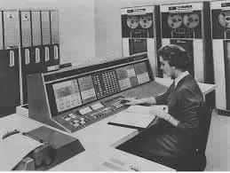
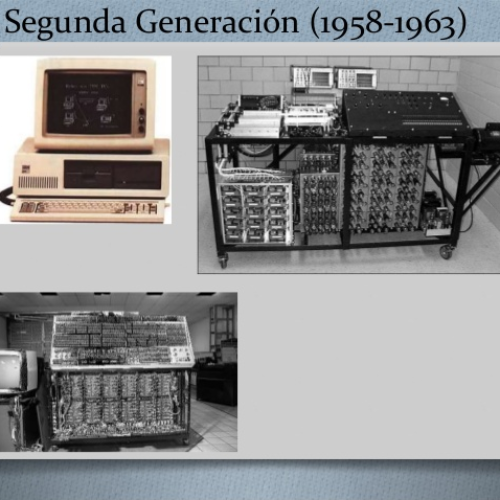

Surge tras la invención del transistor (1947), reemplazando a los tubos de vacío.
Coincide con la Guerra Fría, la carrera espacial y una mayor necesidad de automatización industrial.
Las computadoras empiezan a llegar al sector privado, no solo a gobiernos y universidades.
Características principales
Tecnología base: Transistores (más pequeños, eficientes y confiables).
Tamaño y consumo: Más compactas y con menor consumo eléctrico.
Velocidad: Procesaban millones de operaciones por segundo.
Memoria: Núcleos magnéticos (más rápidos y duraderos).
Lenguajes de programación: COBOL, FORTRAN, ALGOL.
Almacenamiento: Cintas y discos magnéticos (menos uso de tarjetas perforadas).
Interfaz: Texto (pantallas, impresoras, tarjetas/cintas perforadas).

Ventajas sobre la primera generación
Mayor fiabilidad, menor tamaño, menor consumo y calor.
Mantenimiento más fácil.
Mayor velocidad y capacidad de procesamiento.
Limitaciones
Aún costosas para pequeños negocios.
Desarrollo de software complejo y costoso.
Sin interfaces gráficas; programación especializada.
Computadoras destacadas
IBM 1401 (1959): Muy usada en empresas; más de 10,000 vendidas.
IBM 7090 (1959): Para ciencia y uso militar; utilizada por la NASA.
PDP-1 (1960): Más pequeña y accesible; pionera en la computación interactiva.
UNIVAC III (1962): Usada comercialmente; mejor rendimiento.
CDC 1604 (1960): Totalmente transistorizada; influyó en las supercomputadoras.
Impacto social y económico
Transformación en la gestión de empresas, bancos y gobiernos.
Aceleración de la automatización industrial.
Nacimiento de la industria informática.
Expansión de la educación en programación.
